1. MCG distribution#
Part of the Fig. 2 chapter — see it for the panel-by-panel map. The first code cell sets ENTEX_ROOT and activates the no-overwrite guard (see the Reproduction guide). Outputs shown are the author’s original run.
# === Reproduction setup — edit ENTEX_ROOT / REF_ROOT for your machine ===
import os, sys
ENTEX_ROOT = os.environ.get('ENTEX_ROOT', '/large_storage/zhoulab/zhoujt/project/ENTEx')
REF_ROOT = os.environ.get('REF_ROOT', '/large_storage/zhoulab/ref')
BOOK_ROOT = os.environ.get('BOOK_ROOT', f'{ENTEX_ROOT}/analysis/HumanCellEpigenomeAtlas')
sys.path.insert(0, BOOK_ROOT)
os.chdir(f'{ENTEX_ROOT}/analysis') # original working directory
import repro_guard # no-overwrite guard (default: skip existing)
import numpy as np
import pandas as pd
from glob import glob
from scipy.sparse import csr_matrix
from scipy.stats import zscore
from concurrent.futures import ProcessPoolExecutor, as_completed
import pysam
import anndata
import seaborn as sns
import matplotlib as mpl
import matplotlib.pyplot as plt
mpl.style.use('default')
mpl.rcParams['pdf.fonttype'] = 42
mpl.rcParams['ps.fonttype'] = 42
mpl.rcParams['font.family'] = 'sans-serif'
mpl.rcParams['font.sans-serif'] = 'Helvetica'
import warnings
warnings.filterwarnings("ignore")
indir = f'{ENTEX_ROOT}/'
L1_meta = pd.read_csv(f'{indir}L1color.tsv', sep='\t', header=0, index_col=0)
L1_meta = L1_meta.drop('c7', axis=0)
L1_annot = L1_meta['L1_abbr'].to_dict()
L1_color = L1_meta['color'].to_dict()
# L1_annot['c35'] = 'Hema Bnaive'
# L1_annot['c7'] = 'Hema Bmem'
# L1_color['c35'] = L1_color['c7']
meta = anndata.read_h5ad(f'{indir}clustering/merged/5kCG100k3C_summary.h5ad').obs
meta.columns
Index(['FinalmCReads', 'mCHFrac', 'mCGFrac', 'CisLongContact', 'Cis/Trans',
'Donor', 'Tissue', 'celltype', 'ClusterTissue', 'tsne_0', 'tsne_1',
'leiden_cons', 'leiden_cv', 'leiden_init', 'batch', 'L1_annot', 'L1',
'L2', 'L2_any', 'L2_both', 'L2_mc', 'L2_3c', 'tissue_annot', 'group',
'cluster', 'Short/Long', 'mcg_L2', 'hic_L2', 'L2_final'],
dtype='object')
meta['L1'] = meta['L1'].astype(str)
meta.loc[meta['L1']=='c7', 'L1'] = 'c35'
meta.loc[(meta['L1']=='c35') & meta['L2_any'].isin(['c0','c10','c11']), 'L1'] = 'c36'
L1_list = meta.groupby('L1')['mCGFrac'].median().sort_values().index
meta.groupby('L1')['mCGFrac'].median().sort_values()
L1
c2 0.588047
c35 0.626935
c22 0.673768
c17 0.691413
c19 0.693769
c1 0.698092
c4 0.711920
c3 0.712255
c9 0.713150
c32 0.715011
c28 0.715188
c23 0.717301
c11 0.719771
c21 0.722778
c5 0.729060
c13 0.729830
c12 0.733715
c18 0.733815
c20 0.734460
c6 0.735536
c33 0.738423
c30 0.746282
c29 0.748670
c8 0.751361
c34 0.751656
c14 0.760122
c26 0.762705
c25 0.765780
c31 0.773338
c0 0.776169
c24 0.776419
c10 0.777363
c27 0.782516
c36 0.805974
c15 0.805996
c16 0.812916
Name: mCGFrac, dtype: float64
donor_palette = {xx:yy for xx,yy in zip(meta['Donor'].unique(), sns.color_palette('tab20', 20))}
fig, axes = plt.subplots(6, 6, figsize=(15, 12), sharex='all')
for xx,ax in zip(L1_list, axes.flatten()):
tmp = meta.loc[meta['L1']==xx, 'mCGFrac']
sns.histplot(tmp, bins=100, ax=ax)
ax.set_title(L1_annot[xx], fontsize=15)
plt.tight_layout()
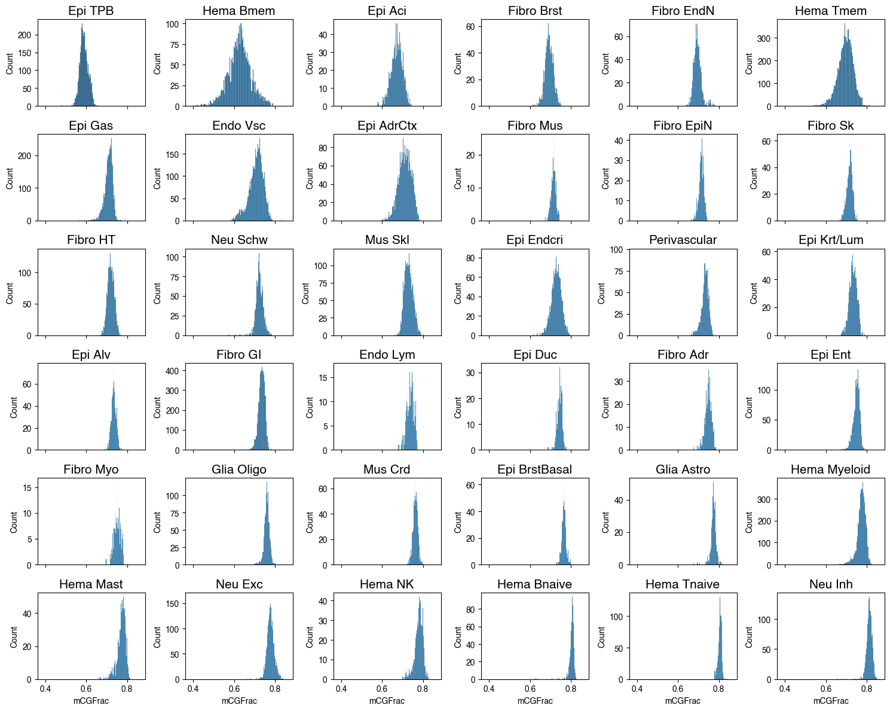
fig, axes = plt.subplots(6, 6, figsize=(15, 12), sharex='all')
for xx,ax in zip(L1_list, axes.flatten()):
tmp = meta.loc[meta['L1']==xx]
count = tmp['Donor'].value_counts()
tmp = tmp.loc[tmp['Donor'].isin(count.index[count>=20])]
tmp['Donor'] = tmp['Donor'].astype(str)
sns.histplot(data=tmp, x='mCGFrac', hue='Donor', bins=100, binrange=(0.45, 0.85),
stat='proportion', common_norm=False, alpha=0.6, palette=donor_palette, ax=ax)
ax.get_legend().set_visible(False)
ax.set_title(L1_annot[xx], fontsize=15)
plt.tight_layout()
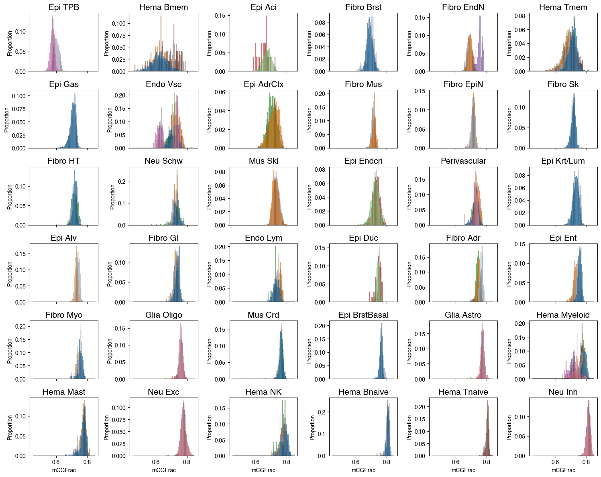
cluster_meta = pd.read_csv(f'{indir}clustering/merged/L2final_celltype_L2both_new.tsv',
sep='\t', index_col=None, header=0,
dtype={'label': str}).fillna('')
cluster_meta['celltype_L2_both_annot'] = (cluster_meta['celltype_abbr'] + ' ' + cluster_meta['label']).str.rstrip()
# fig, ax = plt.subplots(figsize=(8,3), dpi=300)
# sns.violinplot(data=meta, x='L1_annot', y='mCGFrac', hue='L1', ax=ax, palette=colors, order=L1_list,
# # order=pd.Series(L1_list).str.replace('-', ' ').str.replace('_', '/')[idx]
# )
# ax.set_xticklabels(ax.get_xticklabels(), fontsize=12, rotation=90)
# ax.set_yticklabels(ax.get_yticklabels(), fontsize=12)
# ax.set_ylabel('mCG/CG', fontsize=12)
# ax.get_legend().set_visible(False)
# fig.tight_layout()
# fig.savefig('mCG_distribution/L1_cellglobalCG_violin.pdf', transparent=True)

fig, ax = plt.subplots(figsize=(5,2.5), dpi=300)
sns.boxplot(data=meta, x='L1', y='mCGFrac', hue='L1', ax=ax,
palette=L1_color, order=L1_list, showfliers=False)
ax.set_xticks(np.arange(len(L1_list)))
ax.set_xticklabels(L1_list.map(L1_annot), fontsize=8, rotation=90)
ax.set_yticks(np.arange(0.5, 0.81, 0.1))
ax.set_yticklabels(ax.get_yticklabels(), fontsize=8)
ax.set_ylabel('mCG/CG', fontsize=8)
# ax.get_legend().set_visible(False)
fig.tight_layout()
fig.savefig('mCG_distribution/L1_cellglobalCG_box.pdf', transparent=True)
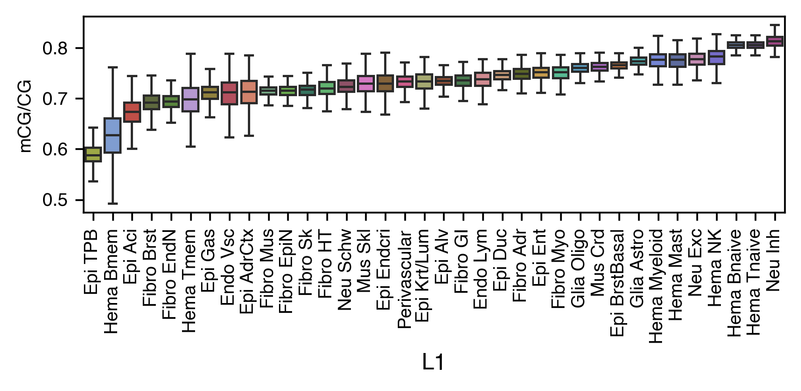
L1_meta = L1_meta.drop(['c35','c36'], axis=0)
import pyBigWig
ratio = []
for ct in L1_meta.index:
bw_file = f'{indir}merged_allc/L1/CGN/{ct}.CGN-Merge.frac.bw'
bw = pyBigWig.open(bw_file)
info = bw.header()
ratio.append([info['sumData']/info['nBasesCovered'],
meta.loc[meta['L1']==ct, 'mCGFrac'].mean()])
ratio = pd.DataFrame(ratio, index=L1_meta.index, columns=['site_ave', 'cell_ave'])
fig, ax = plt.subplots(figsize=(3,3), dpi=300)
ax.scatter(ratio['site_ave'], ratio['cell_ave'], c=ratio.index.map(L1_color), edgecolor='none')
ax.plot([0.55, 0.85], [0.55, 0.85], 'k')
ax.set_xticks(np.arange(0.55, 0.86, 0.1))
ax.set_yticks(np.arange(0.55, 0.86, 0.1))
ax.set_xlabel('site_ave')
ax.set_ylabel('cell_ave')
Text(0, 0.5, 'cell_ave')
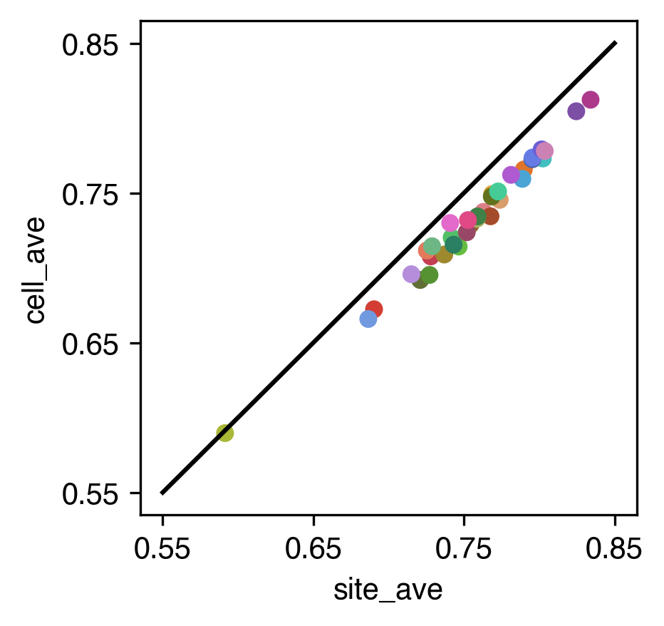
import cooler
chrom_size_path = '/large_experiments/zhoulab/ref/hg38/fasta/hg38.main.chrom.sizes'
chrom_sizes = cooler.read_chromsizes(chrom_size_path, all_names=True)
chrom_sizes = chrom_sizes.iloc[:22]
rm_list = []
for bed_path in [f'{REF_ROOT}/hg38/fasta/hg38.altseq.bed', f'{REF_ROOT}/blacklist/hg38-blacklist.v2.bed.gz']:
bed = pd.read_csv(bed_path, sep='\t', header=None, index_col=None)
bed = {chrom:bed.loc[bed[0]==chrom, [1,2]].values for chrom in chrom_sizes.index}
rm_list.append(bed)
nbins = 100
reslist = [1, 5, 10, 50, 100, 500, 1000, 5000, 10000, 50000]
def multires_cghist(ct):
result = np.zeros((len(reslist), nbins))
allc_path = f'{indir}merged_allc/L1/CGN/{ct}.CGN-Merge.allc.tsv.gz'
for chrom in chrom_sizes.index:
npos = (chrom_sizes[chrom] // reslist[-1] * reslist[-1])
data = []
# with gzip.open(allc_path, 'rt') as allc_lines:
with pysam.TabixFile(allc_path) as allc:
allc_lines = allc.fetch(chrom)
for line in allc_lines:
_, pos, _, context, mc, cov, *_ = line.split("\t")
data.append([pos, mc, cov])
data = pd.DataFrame(data, columns=['pos', 'mc', 'cov']).astype(int)
posfilter = np.ones(data.shape[0]).astype(bool)
for bed in rm_list:
for xx,yy in bed[chrom]:
posfilter[np.logical_and(data['pos']>=xx, data['pos']<=yy)] = False
data = data.loc[posfilter & (data['pos'] < npos)]
data_mc = csr_matrix((data['mc'], (np.zeros(data.shape[0]), data['pos']-1)), shape=[1, npos])
data_cov = csr_matrix((data['cov'], (np.zeros(data.shape[0]), data['pos']-1)), shape=[1, npos])
data_multires_hist = []
for i,res in enumerate(reslist):
tmp = data_mc.reshape((-1, res)).sum(axis=1).A1 / data_cov.reshape((-1, res)).sum(axis=1).A1
tmp = tmp[~np.isnan(tmp)]
tmp = np.histogram(tmp, bins=nbins, range=(0,1))[0]
result[i] += tmp
# print(chrom)
# result = pd.DataFrame(result, index=reslist)
np.save(f'mCG_distribution/multires/{ct}.npy', result)
return result
from concurrent.futures import ProcessPoolExecutor, as_completed
cpu = 20
with ProcessPoolExecutor(cpu) as executor:
futures = {}
for ct in L1_meta.index:
future = executor.submit(
multires_cghist,
ct=ct,
)
futures[future] = ct
result = {}
for future in as_completed(futures):
ct = futures[future]
result[ct] = future.result()
print(f'{ct} finished')
L1_meta = L1_meta.drop(['c7'], axis=0)
result = {ct:np.load(f'mCG_distribution/multires/{ct}.npy') for ct in L1_meta.index}
data = pd.DataFrame([(result[ct]/result[ct].sum(axis=1)[:,None]).flatten() for ct in L1_meta.index], index=L1_meta.index)
data = (data.T / data.sum(axis=1)) * 1e6
L1_list.map(L1_annot)
Index(['Epi TPB', 'Hema Bmem', 'Epi Aci', 'Fibro Brst', 'Fibro EndN',
'Hema Tmem', 'Epi Gas', 'Endo Vsc', 'Epi AdrCtx', 'Fibro Mus',
'Fibro EpiN', 'Fibro Sk', 'Fibro HT', 'Neu Schw', 'Mus Skl',
'Epi Endcri', 'Perivascular', 'Epi Krt/Lum', 'Epi Alv', 'Fibro GI',
'Endo Lym', 'Epi Duc', 'Fibro Adr', 'Epi Ent', 'Fibro Myo',
'Glia Oligo', 'Mus Crd', 'Epi BrstBasal', 'Glia Astro', 'Hema Myeloid',
'Hema Mast', 'Neu Exc', 'Hema NK', 'Hema Bnaive', 'Hema Tnaive',
'Neu Inh'],
dtype='object', name='L1')
cg = sns.clustermap(np.log1p(data), # zscore(data, axis=1),
cmap='vlag', metric='cosine', row_cluster=False,
xticklabels=data.columns.map(L1_annot), figsize=(6,6))
corder = cg.dendrogram_col.reordered_ind.copy()
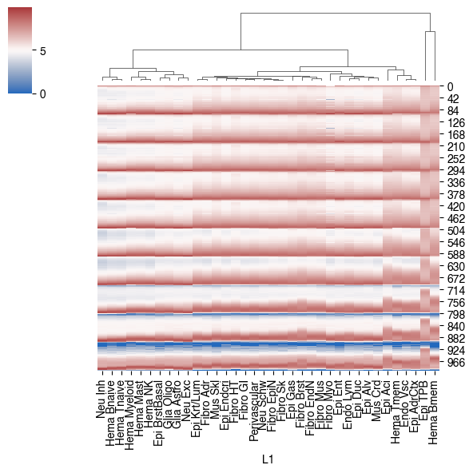
data.columns[corder[::-1]]
Index(['c35', 'c2', 'c9', 'c3', 'c1', 'c22', 'c26', 'c20', 'c30', 'c33', 'c8',
'c34', 'c32', 'c19', 'c17', 'c4', 'c23', 'c28', 'c21', 'c12', 'c6',
'c11', 'c13', 'c5', 'c29', 'c18', 'c10', 'c31', 'c14', 'c25', 'c27',
'c24', 'c0', 'c15', 'c36', 'c16'],
dtype='object', name='L1')
leg_order = pd.Index(['c2', 'c35',
'c22', 'c1', 'c3', 'c9',
'c17', 'c32', 'c19', 'c4',
'c23', 'c28', 'c21', 'c12', 'c6', 'c11', 'c13', 'c5', 'c29', 'c18',
'c26', 'c20', 'c30', 'c33', 'c8', 'c34',
'c10', 'c31', 'c14', 'c25', 'c27', 'c24', 'c0', 'c15', 'c36', 'c16'])
leg_order.map(L1_annot)
Index(['Epi TPB', 'Hema Bmem', 'Epi Aci', 'Hema Tmem', 'Endo Vsc',
'Epi AdrCtx', 'Fibro Brst', 'Fibro Mus', 'Fibro EndN', 'Epi Gas',
'Fibro Sk', 'Fibro EpiN', 'Neu Schw', 'Perivascular', 'Fibro GI',
'Fibro HT', 'Epi Endcri', 'Mus Skl', 'Fibro Adr', 'Epi Krt/Lum',
'Mus Crd', 'Epi Alv', 'Epi Duc', 'Endo Lym', 'Epi Ent', 'Fibro Myo',
'Neu Exc', 'Glia Astro', 'Glia Oligo', 'Epi BrstBasal', 'Hema NK',
'Hema Mast', 'Hema Myeloid', 'Hema Tnaive', 'Hema Bnaive', 'Neu Inh'],
dtype='object')
data = pd.DataFrame([result[ct][0] for ct in L1_meta.index], index=L1_meta.index)
data = (data.T / data.sum(axis=1)) * 1e6
from scipy.stats import zscore
fig, ax = plt.subplots(figsize=(5,2), dpi=300)
i = 0
res = 10
# data = pd.DataFrame([result[ct][i] for ct in L1_list], index=L1_list)
# vmax = np.percentile(data, 99)
ax.imshow(np.log1p(data[leg_order]), cmap='vlag', aspect='auto', interpolation='none')
ax.set_yticks(np.arange(0, 101, 20)-0.5)
ax.set_yticklabels(np.around(np.arange(0, 1.1, 0.2), decimals=1), fontsize=8)
ax.set_xticks(np.arange(len(L1_list)))
ax.set_xticklabels(leg_order.map(L1_annot), rotation=90, fontsize=8)
ax.set_ylabel('mCG/CG', fontsize=8)
fig.tight_layout()
fig.savefig('mCG_distribution/L1_siteCG_heatmap.pdf', transparent=True)
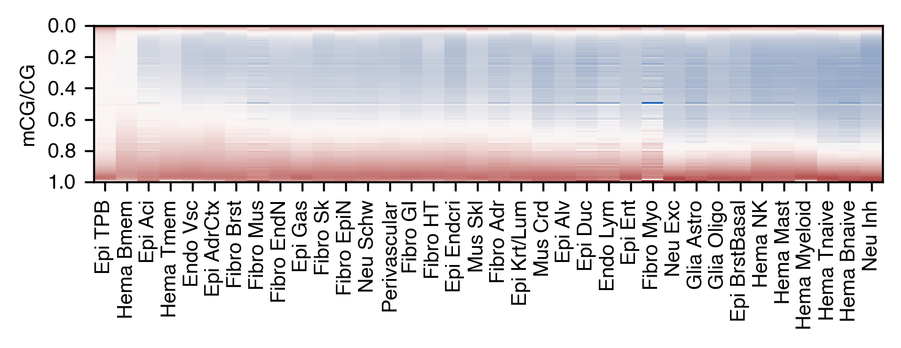
# from scipy.stats import zscore
# fig, ax = plt.subplots(figsize=(5,2), dpi=300)
# i = 0
# res = 10
# # data = pd.DataFrame([result[ct][i] for ct in L1_list], index=L1_list)
# # vmax = np.percentile(data, 99)
# ax.imshow(np.log1p(data[L1_list]), cmap='vlag', aspect='auto', interpolation='none')
# ax.set_yticks(np.arange(0, 101, 20)-0.5)
# ax.set_yticklabels(np.around(np.arange(0, 1.1, 0.2), decimals=1))
# ax.set_xticks(np.arange(len(L1_list)))
# ax.set_xticklabels(L1_list.map(L1_annot), rotation=90, fontsize=8)
# ax.set_ylabel('mCG/CG')
# plt.tight_layout()
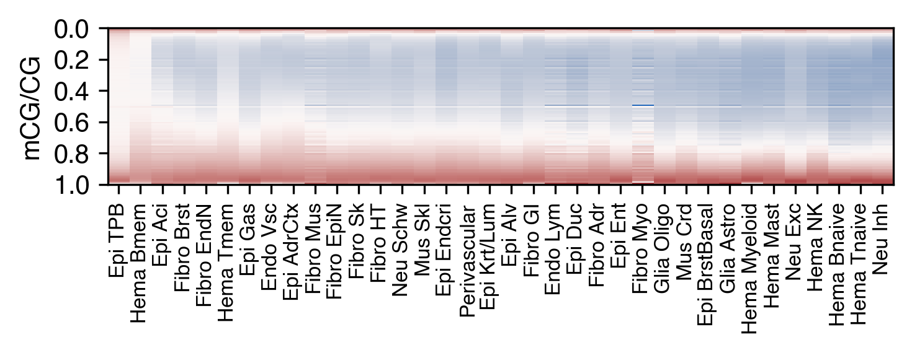
sns.color_palette('Greens', len(reslist))
palette = sns.color_palette('rainbow_r', len(reslist))
xticks = np.array([0, 0.25, 0.5, 0.75, 1.0])
fig, axes = plt.subplots(9, 4, figsize=(6,9), dpi=300, sharex='all')
for i,ct in enumerate(leg_order):
ax = axes.flatten()[i]
ax.set_title(L1_annot[ct], fontsize=8)
for k in range(10):
ax.bar(np.arange(100), result[ct][k]/result[ct][k].sum()*100,
width=1, color=palette[k], alpha=0.2)
ax.set_yticklabels(ax.get_yticklabels(), fontsize=8)
ax.set_xticks(xticks*100)
ax.set_xticklabels(xticks, fontsize=8)
fig.tight_layout()
fig.savefig('mCG_distribution/L1_siteCG_multires_hist.pdf', transparent=True)
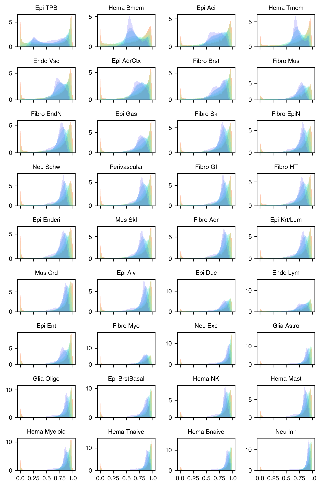
import pysam
def load_allc(ct, chrom, start, end):
global indir
allc_path = f'{indir}merged_allc/L1/CGN/{ct}.CGN-Merge.allc.tsv.gz'
idx, data_mc, data_cov = [], [], []
with pysam.TabixFile(allc_path) as allc:
allc_lines = allc.fetch(chrom, start, end)
for line in allc_lines:
_, pos, _, context, mc, cov, *_ = line.split("\t")
pos, mc, cov = int(pos), int(mc), int(cov)
idx.append(pos-start)
data_mc.append(mc)
data_cov.append(cov)
return np.array([idx, data_mc, data_cov])
chrom = 'chr2'
start = 70000000
end = 85000000
# chrom = 'chr14'
# start = 44000000
# end = 64000000
data_mc_row, data_mc_col, data_mc_data = [], [], []
data_cov_row, data_cov_col, data_cov_data = [], [], []
for i,ct in enumerate(leg_order):
idx, tmp_mc, tmp_cov = load_allc(ct, chrom, start, end)
posfilter = np.ones(len(idx)).astype(bool)
for bed in rm_list:
for xx,yy in bed[chrom]:
posfilter[np.logical_and(idx>=xx, idx<=yy)] = False
print(np.sum(posfilter)/len(posfilter))
idx = idx[posfilter]
tmp_mc = tmp_mc[posfilter]
tmp_cov = tmp_cov[posfilter]
data_mc_row.extend(np.zeros(len(idx))+i)
data_mc_col.extend(idx)
data_mc_data.extend(tmp_mc)
data_cov_row.extend(np.zeros(len(idx))+i)
data_cov_col.extend(idx)
data_cov_data.extend(tmp_cov)
print(ct)
data_mc = csr_matrix((data_mc_data, (data_mc_row, data_mc_col)), shape=[len(leg_order), end-start])
data_cov = csr_matrix((data_cov_data, (data_cov_row, data_cov_col)), shape=[len(leg_order), end-start])
0.9530541433338049
c2
0.9530693135262965
c35
0.9530225418383862
c22
0.9530934222673176
c1
0.9531112183594335
c3
0.9530857000083285
c9
0.9531338603689249
c17
0.9531255217551007
c32
0.9530899789196531
c19
0.953108342217484
c4
0.9530916488794023
c23
0.9531564150266545
c28
0.953147266923904
c21
0.9531644409640361
c12
0.953124739813165
c6
0.9531528529779258
c11
0.9531081971039622
c13
0.9530478924811717
c5
0.9531071419633099
c29
0.9530676892297433
c18
0.9531287790964363
c26
0.9531190043210598
c20
0.953137005980022
c30
0.9531547638939946
c33
0.9530427686363333
c8
0.9531782919815421
c34
0.9531857824721572
c10
0.9531672395955011
c31
0.9530909030334327
c14
0.9531347740143623
c25
0.9531257816538545
c27
0.9530533268836217
c24
0.9530517212705804
c0
0.9530675690317634
c15
0.953186943422052
c36
0.9530476111064787
c16
order = {xx:yy for xx,yy in zip(leg_order, np.arange(len(leg_order)))}
def plot_track(ct, ymin, ax):
mc_tmp = data_mc[order[ct]].toarray()[0]
cov_tmp = data_cov[order[ct]].toarray()[0]
# tmp = (data_mc.getrow(i).A1 / data_cov.getrow(i).A1).reshape((-1, res))
# tmp = np.nanmean(tmp, axis=1)
tmp = mc_tmp.reshape((-1, res)).sum(axis=1) / cov_tmp.reshape((-1, res)).sum(axis=1)
x = np.arange(len(tmp))
# ax.plot(x, tmp, linewidth=0.01)
nbins = tmp.shape[0]
ax.set_xlim([0, nbins])
ax.set_ylim([ymin, 1.0])
step = nbins//3
ax.set_xticks(np.arange(0, nbins+1, step))
ax.set_xticklabels([f'{xx//1e6}M' for xx in np.arange(start, end+1, step*res)], fontsize=10)
ax.set_yticks([ymin, 1.0])
# ax.set_yticklabels(ax.get_yticklabels(), fontsize=8)
ax.fill_between(x, tmp, ymin, where=tmp >= ymin, facecolor=L1_color[ct], interpolate=True)
ax.set_title(L1_annot[ct], fontsize=10)
sns.despine(ax=ax, right=False)
return
res = 10000
fig, axes = plt.subplots(6, 2, figsize=(8, 4.8), dpi=300, sharex='all')
for i,ct in enumerate(['c2','c35','c22','c1','c17','c3']):
ax = axes[i,0]
plot_track(ct, 0.5, ax)
for i,ct in enumerate(['c25','c36','c30','c15','c29','c16']):
ax = axes[i,1]
plot_track(ct, 0.5, ax)
fig.tight_layout()
fig.savefig('mCG_distribution/L1_track.pdf', transparent=True)
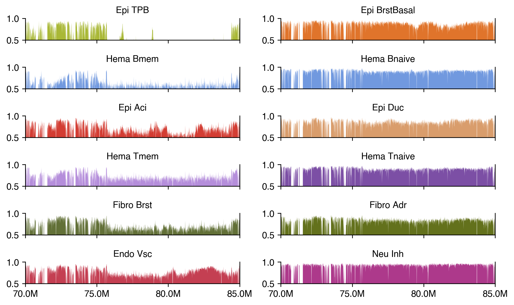
res = 10000
fig, axes = plt.subplots(4, 2, figsize=(8, 4), dpi=300, sharex='all')
for i,(ct,ymin) in enumerate(zip(['c35','c22','c1','c17'], [0.3, 0.5, 0.5, 0.5])):
ax = axes[i,0]
plot_track(ct, ymin, ax)
for i,(ct,ymin) in enumerate(zip(['c36','c30','c15','c29'], [0.85, 0.8, 0.8, 0.75])):
ax = axes[i,1]
plot_track(ct, ymin, ax)
fig.tight_layout()
fig.savefig('mCG_distribution/L1_track_ylim.pdf', transparent=True)
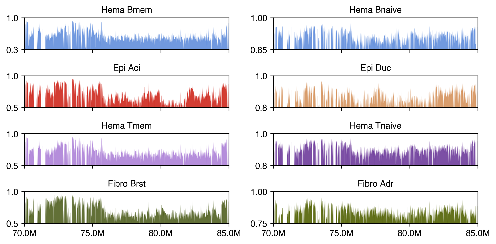
(end-start)//100
180000
donor_palette = {xx:yy for xx,yy in zip(meta['Donor'].unique(), sns.color_palette('tab20', 20))}
colors = pd.read_csv(f'{indir}L1color.tsv', sep='\t', header=0, index_col=0)['color']
fig, axes = plt.subplots(7, 5, figsize=(15, 14), sharex='all')
for xx,ax in zip(meta.groupby('L1_annot')['mCHFrac'].mean().sort_values().index[:-2], axes.flatten()):
tmp = meta.loc[meta['L1_annot']==xx]
count = tmp['Donor'].value_counts()
tmp = tmp.loc[tmp['Donor'].isin(count.index[count>=20])]
tmp['Donor'] = tmp['Donor'].astype(str)
sns.histplot(data=tmp, x='mCHFrac', hue='Donor', bins=100, binrange=(0.005, 0.025),
stat='proportion', common_norm=False, alpha=0.6, palette=donor_palette, ax=ax)
ax.get_legend().set_visible(False)
ax.set_title(xx, fontsize=15)
for ax in axes.flatten()[-2:]:
ax.axis('off')
plt.tight_layout()
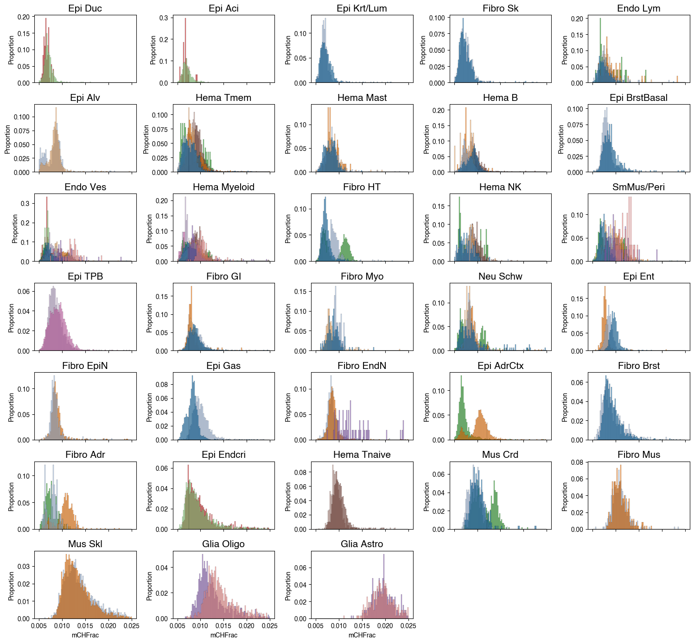
L2meta = pd.DataFrame(index=result.index)
L2meta['L1_annot'] = result.index.str.split('-').str[0].map(L1annot)
L2meta['globalCG'] = global_cg.copy()
selc = []
border = [-0.5]
yticks = []
yticklabels = []
for xx in L2meta[['L1_annot', 'globalCG']].groupby('L1_annot')['globalCG'].mean().sort_values().index:
tmp = L2meta.loc[L2meta['L1_annot']==xx, 'globalCG'].sort_values().index
selc.append(tmp)
yticks.append(border[-1]+len(tmp)/2)
border.append(border[-1]+len(tmp))
yticklabels.append(xx)
selc = np.concatenate(selc)
# result = result.loc[data.mean(axis=1).sort_values().index]
# result = result.loc[global_cg.sort_values().index]
result = result.loc[selc]
# order_frac = result.index.copy()
sns.clustermap(np.log2(result+1), col_cluster=False, row_cluster=False, vmin=10, vmax=20, cmap='vlag', figsize=(5,8))
<seaborn.matrix.ClusterGrid at 0x7fc0b753af20>
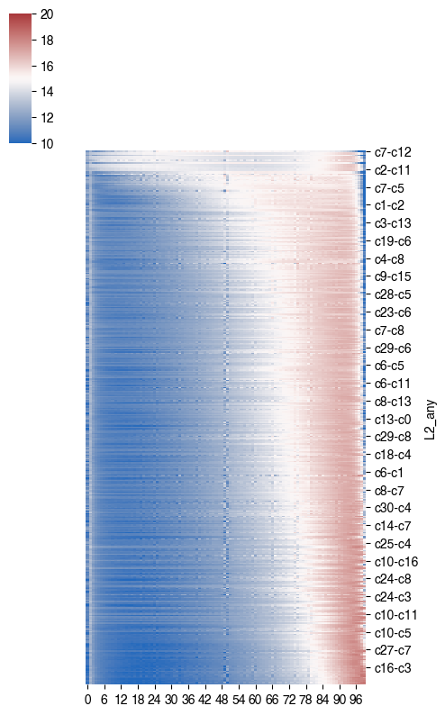
row_colors = result.index.str.split('-').str[0].map(colors)
cg = sns.clustermap(np.log2(result+1), col_cluster=False, row_cluster=False,
vmin=10, vmax=18, cmap='vlag', figsize=(5,12),
row_colors=row_colors)
xticks = np.arange(0,101,10)
xticklabels = np.around(xticks/100, decimals=1).astype(str)
cg.ax_heatmap.axes.set_xticks(xticks, labels=xticklabels)
cg.ax_heatmap.axes.set_yticks(yticks, labels=yticklabels)
for xx in colors.index:
cg.ax_col_dendrogram.bar(0, 0, color=colors.loc[xx],
label=L1annot[xx], linewidth=0)
cg.ax_col_dendrogram.legend(loc="center", ncol=5, framealpha=0)
# cg.ax_heatmap.vlines(x=70, colors='k', ymin=-0.5, ymax=result.shape[0]-0.5, linewidths=0.5)
for xx in border:
cg.ax_heatmap.hlines(y=xx, colors='k', xmin=-0.5, xmax=result.shape[1]-0.5, linewidths=0.5)
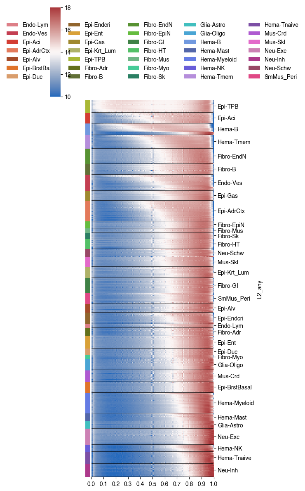
sns.clustermap(np.log2(result+1), col_cluster=False, metric='cosine', vmin=10, vmax=20, cmap='vlag', figsize=(5,8))
<seaborn.matrix.ClusterGrid at 0x7f381e2a7c40>
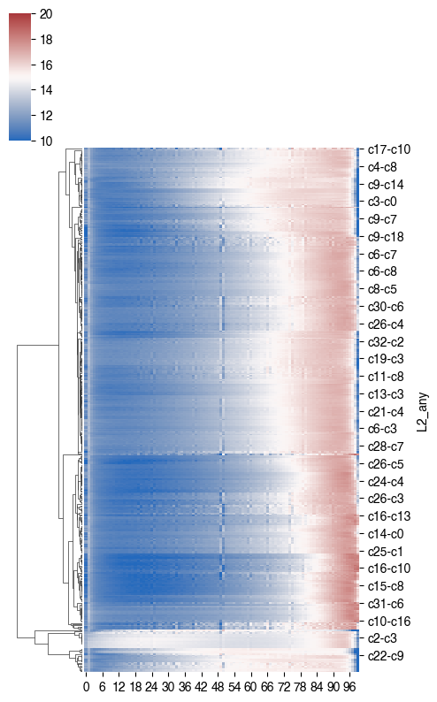
np.exp(10)
22026.465794806718
np.exp2(15)
32768.0
from scipy.cluster.hierarchy import fcluster
cg = sns.clustermap(np.log2(result+1), col_cluster=False, metric='euclidean', vmin=10, vmax=18, cmap='vlag', figsize=(0.1,0.1))
row_linkage = cg.dendrogram_row.linkage
nc = 20
cluster = fcluster(row_linkage, t=nc, criterion='maxclust') - 1
# cg.ax_heatmap.axes.set_xticks(cg.ax_heatmap.axes.get_xticks(), labels =xticklabel)
colors = plt.cm.get_cmap('tab20', nc)
cluster_colors = [colors(c) for c in cluster]
cg = sns.clustermap(np.log2(result+1), col_cluster=False, row_colors=cluster_colors, metric='euclidean', vmin=10, vmax=18, cmap='vlag', figsize=(5,8))
xticks = np.arange(0,101,10)
xticklabel = np.around(xticks/100, decimals=1).astype(str)
cg.ax_heatmap.axes.set_xticks(xticks, labels=xticklabel)
for label in np.unique(cluster):
cg.ax_col_dendrogram.bar(0, 0, color=colors(label),
label=label, linewidth=0)
cg.ax_col_dendrogram.legend(loc="center", ncol=5, framealpha=0)
cg.ax_heatmap.vlines(x=70, colors='k', ymin=0, ymax=result.shape[0], linewidths=0.5)
<matplotlib.collections.LineCollection at 0x7fbf1296b100>
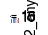
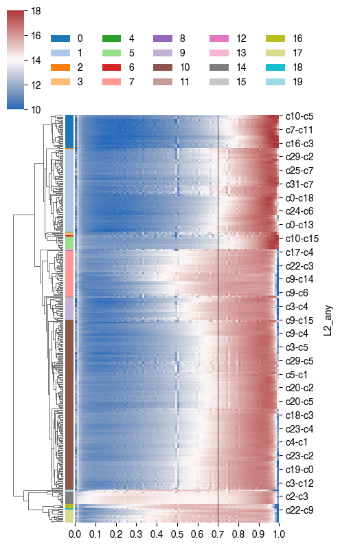